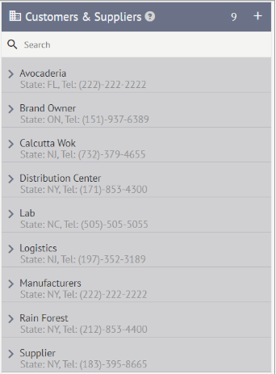

2. CRM¶
CRM stands for Customer Relations Management. Cibos Menu’s CRM separates your company’s relationships into three categories: Contacts, Retailers, and Customers & Suppliers.

2.1. Contacts¶
Contacts displays a list of your company’s Contacts with individuals. You can view their name, title or role, and telephone number at a glance. Use the Search function to narrow down a long list of Contacts and find a specific Contact. On the Contacts header, you can also quickly see how many Contacts are in your Contact list. For example, the Contacts list below has five entries:
{kind=link}
How to Add a New Contact
Click the Plus icon on the Contacts header to add a new Contact to your Contacts list.

A New Contact form will appear. You can enter the following information:
First Name – required
Last Name – required
Title – eg. Supervisor or Purchasing
Email – required, eg. Supervisor@wholefoods.com
Work – required, work telephone number eg. 1-(800)-922-9248
Extension #
Mobile – mobile telephone number eg. 1-(800)-922-9248
Type – Choose from Consultant, Supplier, Retail Store Contact, Manufacturer, Distributor, Logistics, Broker, or Brand Owner
Note – Add a text note
To save a contact, you must enter a First and Last Name, Email, and Work Telephone Number. For the most complete contact entry, fill in as much information as possible. You will be able to edit individual Contacts later.
When you add a Note, it will appear directly below the main contact form. The Note will have a date and timestamp as well as an Edit and Delete option.
When you are done adding information to the New Contact form, click Save.
How to Edit an Existing Contact
1.To edit an existing Contact, hover over a name in the Contacts list.

Click the Edit icon from the mini pop-up menu.

The Edit Contact form will appear. You can easily see all current contact information and make edits as necessary.
Click Save when you are finished editing the contact.
How To Show/Hide a Contact
1.To Hide an existing contact, hover over a name in the contact list.
Click on the Hide/Show icon from the mini pop-up list to hide the contact. The contact will now be Grayed out in your Contacts list, Retailers list, and Customers & Suppliers list. This is a great feature when you need to ‘Pause’ a relationship for the time being but want to keep the contact in your records. To have the contact appear as normal, just click the Hide/Show icon again.

How To Delete a Contact
To Delete an existing contact, hover over a name in the contact list.
Click the Delete icon from the mini pop-up menu.
You will then be asked, ‘Are you sure you want to completely remove this contact?’ Click OK to proceed.
2.2. Retailers¶
Retailers display a list of your company’s contacts with Retailers. You can view the Retailer’s name, city, state, store ID, and telephone number at a glance. Use the Search function to narrow down a long list of Retailers and find a specific Retailer. On the Retailers header, you can also quickly see how many Retailers are in your Retailer list. For example, the Retailer list below has three entries:
How to Add a New Retailer
Click the Plus icon on the Contacts header to add a new contact to your Contacts list.

A New Retailer Record form will appear. You can enter the following information:
Name required
Store#
Email
Telephone
Extension
Address
City
State/ Province Abbrv. – required
Zip – required
URL
Note
To save a retailer record, you must enter a retailer name. Store ID, telephone number, address, city, state/province abbr., and zip. For the most complete retailer entry, fill in as much information as possible. You will be able to edit individual retailers later.

When you add a Note, it will appear directly below the main retailer form. The Note will have a date and timestamp as well as an Edit and Delete option.
When you are done adding information to the New Retailer Record form, click Save.
How to Edit an Existing Retailer Record
To edit an existing Retailer Record, follow the same workflow outlined for editing an existing contact.

How to Add Contacts to a Retailer
You can integrate your Contacts list and Retailers list, allowing you to add Contacts to specific Retailers. This helps you easily track and organize your network of Contacts and Retailers, so you know who is associated with which retailer. Contacts can be assigned to multiple Retailers. For example, the Red Apron Butcher retailer below has Anthony Bourdain listed on their staff:
1.Hover over the contact you want to add to a Retailer. Then click to grab the contact and drag on top of the retailer name to expand the Retailer.
2.Now you can place the Contact within the Retailer’s sub-list. You can organize these Contacts anywhere in the list when first adding them. If you want a Supervisor to fall under the General Manager or CEO, you can do that now.
How to Delete Contacts from a Retailer
1.Click to expand the Retailer’s sub-list and hover over the Contact you want to remove. Click the X icon to remove a Contact.
2.You will then be asked, ‘Are you sure you want to completely remove this item?’ Click OK to proceed.
2.3. Customers & Suppliers¶
Customers & Suppliers offers a higher-level way to organize your CRM as your Contacts list and Retailers list grows. You can view the Customer or Supplier’s name, state, and telephone number at a glance. Use the Search function to narrow down a long list of retailers and find a specific retailer. On the Customers & Suppliers header, you can also quickly see how many Customers & Suppliers are on your list. For example, the Customer & Supplier list below has nine entries:
How to Add a New Customer or Supplier
1.Click the Plus icon on the Customers & Suppliers header to add a new contact to your Customers & Suppliers list.
2.A New Customer/Supplier Record will appear. You can enter the following information:
Logo – click the Profile icon to upload a Logo
Name – required
Telephone – required
Extension #
Additional # – set the Type from the drop-down menu, enter the phone number and any extension, and then click Add
Vendor ID
Customer #
Address – required
City – required
State/ Province Abbrv. – required
Zip – required
URL
Type – Choose from Supplier, Manufacturer, Distributor, Broker, Logistics, Brand Owner, Trade and Marketing, and Lab
Orders Email – required
Term – choose the agreed Term; will then auto-populate when creating an Order with this Customer/Supplier
Note – enter a note into the text box and then click Add
Manufacturer
3.When creating a New Customer/Supplier Record, if you choose the Manufacturer Type, the record expands to add the following fields:
Internal Locations – click the green plus icon to create an Internal Location for that specific Manufacturer. Then click the green check mark to save.
Fee – enter the manufacturer’s Fee and set the unit of measurement.
NOTE: The Fee auto-populates when creating an Order with this Manufacturer. When creating a new Bin Location in Inventory, choose the Manufacturer and then specify any Internal Location you’ve added in the CRM for this Manufacturer.
Logistics
4.When creating a New Customer/Supplier Record, if you choose the Logistics Type, the record expands to add the following fields:
Estimated Freight Cost
Fuel Surcharge
Minimum charge
5.To save a New Customer/Supplier Record, you must enter the Customer/Supplier Name, Telephone Number, Address, City, State/ Province Abbr., Zip, Type, and Orders Email. For the most complete Customer/Supplier Record, fill in as much information as possible. You will be able to edit individual Customer/Supplier Records later. Click Save when the Custom/Supplier Record is complete.
How to Edit an existing Customer/Supplier Record
2.To edit an existing Customer/Supplier Record, follow the same workflow outlined in editing an existing contact.
How to Add Contacts or Retailers to a Customer/Supplier
To add a Contact or Retailer to a Customer/Supplier, follow the same workflow outlined in adding contacts to a retailer
How to Delete Contacts from a Customer/Supplier
To delete a Contact or Retailer from a Customer/Supplier, follow the same workflow outlined in deleting contacts from a retailer.